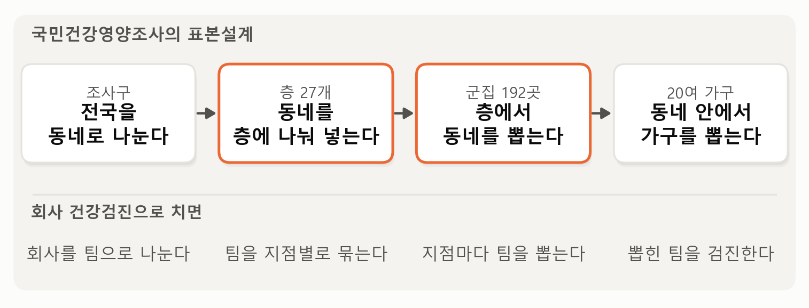
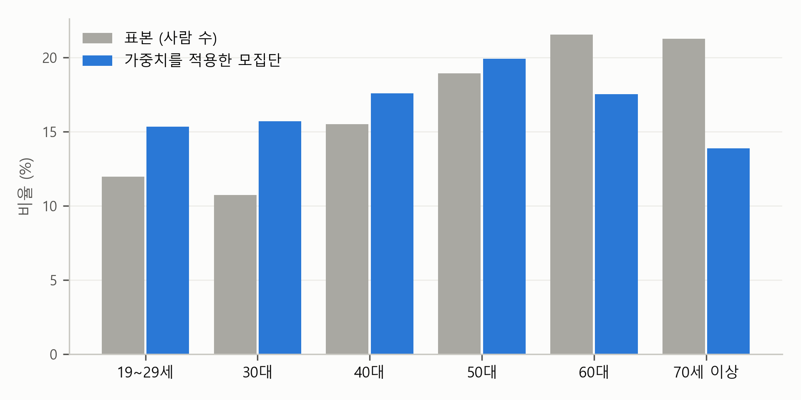

2. 표본이 모집단을 닮게 — 가중치와 표본설계#
이 장 첫머리의 보고서는 첫 줄과 표 아래 통계 줄에 이렇게 적었습니다.
모든 수치는 모집단을 대표하도록 가중치를 적용
주: \(n\) = 5,731, \(R^2\) = 0.212, 표준오차는 표본설계(층 27개, 군집 192개)를 반영
단순회귀분석 장과 다중회귀분석 장의 보고서에는 없던 말입니다. 거래 기록처럼 해당하는 것을 모두 모은 자료와 달리, 국민건강영양조사는 성인 4천만 명을 모두 조사할 수 없으니, 일부를 뽑아 조사하고 그 결과로 전체를 추정합니다. 이렇게 뽑힌 사람들을 표본(sample), 알고 싶은 전체를 모집단(population)이라고 부릅니다.
미리 답부터 말하면, 두 줄은 이런 뜻입니다. 표본은 사람을 뽑은 방식 때문에 모집단과 생김새가 다르다. 가중치는 표본의 생김새를 모집단에 맞춰, 평균이나 계수 같은 숫자를 바로잡는다. 표본설계를 반영한다는 것은 그 숫자의 표준오차, 곧 표본을 다시 뽑으면 숫자가 얼마나 흔들릴지를 사람을 실제로 뽑은 방식대로 계산한다는 뜻이다. 이 절에서는 이 두 가지를 차례로 봅니다. 이 장 전체를 꿰는 비유로 회사 건강검진을 쓰겠습니다.
회사 건강검진의 표본 — 지점마다 따로, 팀째로#
직원이 1만 명인 회사가 있다고 해 봅시다. 본사와 지방 지점 여럿으로 이루어져 있습니다. 직원은 모두 해마다 정기 건강검진을 받지만, 올해 회사는 그와 별도로 직원들의 건강 상태를 더 자세히 알아보는 정밀 검진을 하기로 했습니다. 정밀 검진은 한 사람에 반나절이 걸려서, 1만 명 가운데 500명만 뽑아 검진합니다. 어떻게 뽑으면 좋을까요?
가장 단순한 방법은 직원 명부에서 500명을 제비뽑기로 뽑는 것입니다. 그런데 실제로는 그렇게 하기 어렵습니다. 검진 버스는 한 번 가면 한 사무실의 여러 사람을 한꺼번에 검진하는 것이 효율적이니까요. 그래서 회사는 이렇게 뽑기로 합니다.
지점마다 따로 뽑는다. 본사에서 몇 팀, 부산 지점에서 몇 팀, 광주 지점에서 몇 팀, 이렇게 정해 두고 뽑는다.
팀째로 뽑는다. 사람을 한 명씩 뽑지 않고, 팀을 뽑은 다음 그 팀의 직원을 모두 검진한다.
이렇게 사람을 뽑는 방식을 통틀어 표본설계라고 부릅니다. 국민건강영양조사도 같은 방식으로 사람을 뽑습니다. 순서대로 보면 이렇습니다.
동네로 나뉜 전국: 전국은 조사구라는 작은 구역으로 나뉘어 있습니다. 조사구는 통계청이 인구주택총조사를 하려고 전국을 수십 가구씩 나눠 놓은 구역으로, 아파트 단지의 몇 개 동이나 주택가의 한 블록쯤 되는 크기입니다. 이 책에서는 줄여서 동네라고 부르겠습니다.
동네를 칸에 나눠 넣기: 전국의 모든 동네를 몇 가지 기준에 따라 여러 칸에 나눠 넣습니다. 기준은 어느 시도인지, 도시의 동인지 농어촌의 읍면인지, 아파트 동네인지 단독주택이나 연립주택 같은 일반주택 동네인지입니다. 동네가 작은 구역이라 한 동네는 대개 아파트면 아파트, 주택가면 주택가입니다. 그래서 주거 형태도 사람이 아니라 동네를 나누는 기준이 됩니다.
칸마다 동네 뽑기: 칸마다 따로 동네를 몇 곳씩 뽑습니다. 이렇게 뽑은 동네가 전국에서 모두 192곳입니다.
동네 안에서 가구 뽑기: 뽑힌 동네마다 20여 가구를 뽑아, 그 가구원을 조사합니다. 이동검진차량이 그 동네에 서서 동네 사람들을 검진하는 것이죠.
여기서 칸이 회사의 지점에 해당하는 층(stratum)이고, 칸마다 뽑은 동네가 회사의 팀에 해당하는 군집(cluster)입니다. 통계청이나 질병관리청의 문서에서는 군집을 집락이라고도 부르니, 국민건강영양조사의 원시자료 이용지침서에서 이 말을 만나면 같은 것으로 읽으면 됩니다. 이 자료에 들어 있는 층 변수는 27개의 칸으로 되어 있습니다. 보고서의 “표본설계(층 27개, 군집 192개)”가 바로 이것입니다.
그림 2-1은 이 네 단계를 회사 건강검진과 나란히 놓은 것입니다.

그림 2-1. 국민건강영양조사의 표본설계 네 단계와, 회사 건강검진으로 치면 각 단계가 무엇에 해당하는지.
그림에서 보듯이 주황으로 두른 둘째와 셋째 단계가 표본설계의 핵심입니다. 동네를 나눠 넣은 칸이 층이고, 칸마다 뽑은 동네가 군집입니다. 회사로 치면 지점마다 따로, 팀째로 뽑는 것과 같습니다.
회사 건강검진의 한 사람 몫 — 작은 지점은 넉넉히#
다시 회사로 돌아가 봅시다. 회사는 뽑는 방법을 하나 더 정했습니다. 직원이 적은 지점은 넉넉히 뽑는 것입니다. 숫자로 풀어 보겠습니다. 단순하게, 회사가 본사(9,600명)와 제주 지점(400명) 둘뿐이라고 해 봅시다. 500명을 직원 수에 비례해 뽑으면 제주 지점에서는 20명만 뽑힙니다. 20명으로는 제주 지점의 건강 상태를 따로 말하기 어렵죠. 그래서 회사는 제주 지점에서 100명, 본사에서 400명을 뽑았습니다.
이제 표본 500명 가운데 제주 지점 직원이 100명, 20%입니다. 실제 직원 가운데 제주 지점은 4%뿐인데 말이죠. 이대로 500명의 평균을 내면 제주 지점 직원들의 건강 상태가 실제보다 크게 반영된 평균이 됩니다. 그래서 평균을 낼 때 한 사람이 직원 몇 명의 몫인지를 따져 셉니다. 본사에서 뽑힌 한 사람은 본사 직원 9,600명 가운데 400명에 뽑혔으니 직원 24명의 몫(9,600 ÷ 400)이고, 제주 지점에서 뽑힌 한 사람은 직원 4명의 몫(400 ÷ 100)입니다. 본사 직원의 답은 24명분으로, 제주 직원의 답은 4명분으로 세어 평균을 내면 직원 1만 명 전체의 평균을 바르게 추정할 수 있습니다. 바로 이 “한 사람이 몇 명의 몫인가”가 가중치(sampling weight)입니다.
국민건강영양조사에서도 사람마다 뽑힐 확률이 다르고, 조사에 응하는 정도도 다릅니다. 그래서 이 조사도 한 사람이 모집단의 몇 명의 몫인지를 가중치로 담아 둡니다. 이제 가중치부터 보겠습니다.
가중치 — 한 사람이 모집단의 몇 명을 대표하나#
가중치는 그 사람의 답이 모집단의 몇 명을 대표하는지를 나타내는 숫자입니다. 이 자료에서 가중치의 평균은 약 7,400입니다. 성인 한 사람의 답이 대략 성인 7,400명을 대표한다는 뜻이고, 5,731명의 가중치를 모두 더하면 4,230만 명입니다. 이것이 이 조사의 모집단, 곧 시설에 사는 사람 등을 뺀 우리나라 성인의 수입니다.
그런데 가중치는 사람마다 다릅니다. 가장 작은 사람은 315, 가장 큰 사람은 30,575로 97배 차이가 납니다. 왜 이렇게 다를까요? 그림 2-2를 봅시다.

그림 2-2. 19세 이상 표본 5,731명의 연령대별 비율. 회색: 표본의 사람 수 그대로. 파랑: 가중치를 적용한 비율(모집단의 연령 구성).
그림에서 보듯이 표본은 모집단보다 나이가 많습니다. 70세 이상은 표본의 21.3%를 차지하지만 가중치를 적용한 모집단에서는 13.9%입니다. 반대로 30대는 표본에서 10.7%, 모집단에서는 15.7%입니다. 연령대마다 조사에 응하는 정도가 다르기 때문입니다. 낮에 집에 있는 고령자는 조사에 잘 참여하고, 일하느라 바쁜 30대는 덜 참여합니다. 성별도 비슷합니다. 여성이 표본의 57.0%이지만 모집단에서는 49.8%입니다.
가중치는 이런 차이를 바로잡습니다. 30대 한 사람의 가중치는 평균 10,776, 70세 이상 한 사람은 평균 4,812입니다. 표본에 덜 들어온 30대는 한 사람을 더 많은 사람의 몫으로, 많이 들어온 고령자는 더 적은 사람의 몫으로 세는 것이죠. 회사 건강검진에서 많이 뽑은 제주 지점 직원 한 명을 4명분으로, 본사 직원 한 명을 24명분으로 센 것과 같습니다. 국민건강영양조사의 가중치는 뽑힐 확률의 차이, 조사에 응하지 않은 사람, 그리고 모집단의 성별·연령 구성(인구 통계로 알려진 값)을 함께 반영해 만듭니다.
가중치를 적용하면 숫자가 달라집니다. 표본의 평균 나이는 53.9세인데, 가중치를 적용한 평균은 49.7세입니다. 대졸 이상의 비율은 40.0%에서 46.1%로, 평균 수축기 혈압은 120.6에서 119.4로, 고혈압 유병률은 35.5%에서 30.4%로 바뀝니다. 가중치를 적용한 평균을 가중 평균이라고 부릅니다. 계산은 간단합니다. 사람마다 값에 가중치를 곱해 모두 더한 다음, 가중치의 합으로 나눕니다. 세 사람의 혈압이 110, 120, 140이고 가중치가 1, 1, 2라고 해 봅시다. 그냥 낸 평균은 이렇습니다.
가중 평균은 이렇습니다.
가중치가 2인 셋째 사람이 두 사람 몫으로 세어져, 평균이 그 사람의 140 쪽으로 조금 더 옮겨 간 것이죠. 보고서의 그림 왼쪽 패널에 있는 학력별 평균 혈압도 이렇게 계산한 가중 평균입니다.
회사 건강검진의 숫자로 한 번 보겠습니다. 가령 검진 결과 본사에서 뽑힌 400명의 평균 수축기 혈압이 122, 제주 지점에서 뽑힌 100명의 평균이 116이었다고 해 봅시다. 500명을 그냥 평균하면 120.8인데, 가중치를 적용하면 121.8이 됩니다. 한 사람이 24명분인 본사 직원의 평균(122) 쪽으로 옮겨 간 것이죠. 실제 회사에서 본사 직원은 96%이니, 회사 전체의 평균은 본사의 평균에 가까워야 맞습니다. 그냥 낸 평균 120.8은 표본에 제주 직원이 실제보다 많이 들어 있어서 제주 쪽으로 치우친 숫자였습니다.
가중 평균의 원리는 한 줄로 요약됩니다. 사람마다 계산한 값에 가중치를 곱해 더한다. 가중치를 쓰는 다른 계산도 모두 이 원리를 따릅니다. 회귀 계수를 구할 때는 사람마다의 잔차제곱에 가중치를 곱해 더하고(가중 최소제곱, 바로 아래에서 봅니다), 그 계수의 표준오차를 구할 때도 사람마다 계산한 값에 가중치를 곱해 더합니다(이 절의 뒤에서 봅니다). 계산이 복잡해 보여도 출발점은 늘 “한 사람을 몇 명의 몫으로 세는가”입니다.
먼저 회귀분석입니다. 단순회귀분석 장에서 소개한 최소제곱법은 잔차제곱의 합이 가장 작아지는 계수를 찾습니다. 가중치를 적용할 때는 사람마다 잔차제곱에 가중치를 곱해 더한 합을 가장 작게 만듭니다. 그러면 가중치가 큰 사람, 곧 더 많은 사람의 몫을 맡은 사람의 잔차를 더 줄이려는 쪽으로 직선이 맞춰집니다. 이것을 가중 최소제곱이라고 합니다. 보고서의 회귀 결과는 모두 가중 최소제곱으로 추정했습니다. 보고서의 회귀식은 이렇습니다.
학력과 여성은 해당하면 1, 아니면 0인 더미 변수이고, 학력의 기준은 초졸 이하입니다. 이 식을 읽는 법은 다음 절에서 봅니다.
가중치를 넣으면 회귀 계수는 얼마나 달라질까요? 표 2-1은 보고서의 회귀식을 세 가지 방법으로 계산한 것입니다. “제비뽑기 가정”은 사람을 한 명씩 제비뽑기로 뽑았다고 보고 표준오차를 계산했다는 뜻입니다. 셋째 줄의 “층과 군집 반영”은 이 절의 뒤에서 봅니다.
표 2-1. 보고서의 회귀식을 세 가지 방법으로 계산했을 때의 계수와 표준오차(괄호 안)
계산 방법 |
대졸 이상 |
여성 |
|---|---|---|
가중치 없음, 제비뽑기 가정 |
−7.19 (0.806) |
−5.28 (0.377) |
가중치 적용, 제비뽑기 가정 |
−7.53 (0.857) |
−6.29 (0.387) |
가중치 적용, 층과 군집 반영 (보고서) |
−7.53 (0.903) |
−6.29 (0.397) |
표에서 보듯이 가중치는 계수도 바꿉니다. 첫 두 줄을 보세요. 대졸 이상의 계수는 −7.19에서 −7.53으로, 그리고 여성의 계수는 −5.28에서 −6.29로 그보다 조금 더 움직입니다. 그래도 평균 나이가 4세나 달라진 것에 비하면 움직임이 작은 편입니다. 회귀식에 성별과 나이가 이미 들어 있어서, 표본에 고령자와 여성이 많다는 것을 회귀식이 상당 부분 감안하기 때문입니다. 그래도 회귀식이 모든 차이를 감안해 주리라 보장할 수는 없으니, 국가 표본조사 자료를 분석할 때는 회귀분석에도 가중치를 적용하는 것이 기본입니다.
가중치에는 대가가 하나 있습니다. 사람마다 가중치가 고르지 않으면, 표본의 정보가 사람 수보다 적어집니다. 가중치가 아주 큰 몇 사람의 답이 결과를 크게 좌우하기 때문입니다. 이 자료의 5,731명은 가중치까지 따지면 약 4,505명만큼의 정보를 가진 셈입니다. 이것을 유효 표본 크기라고 부릅니다. 가중치가 고를수록 유효 표본 크기는 표본의 실제 사람 수에 가까워집니다.
유효 표본 크기는 가중치의 합을 제곱한 값을 가중치 제곱의 합으로 나눠 계산합니다. 네 사람의 가중치가 모두 1이면 (1 + 1 + 1 + 1)² ÷ (1 + 1 + 1 + 1) = 16 ÷ 4 = 4로, 사람 수 그대로입니다. 그런데 가중치가 1, 1, 1, 9라면 (1 + 1 + 1 + 9)² ÷ (1 + 1 + 1 + 81) = 144 ÷ 84 = 1.7입니다. 네 사람을 조사했지만, 한 사람의 답이 평균의 4분의 3을 좌우하니 정보로는 두 사람에도 못 미치는 셈입니다. 이 자료의 가중치는 가장 작은 것과 가장 큰 것이 97배 차이 나지만 대부분은 평균 근처에 모여 있어서, 5,731명이 4,505명으로 줄어드는 정도에 그칩니다.
가중치는 어떻게 만들고, 어느 것을 쓰나#
자료를 직접 다룰 때 알아 두면 좋은 내용입니다.
국민건강영양조사의 가중치는 대략 세 단계를 거쳐 만들어집니다. 첫째, 뽑힐 확률의 역수에서 출발합니다. 100명 가운데 한 명꼴로 뽑힌 사람은 100명의 몫, 10명 가운데 한 명꼴로 뽑힌 사람은 10명의 몫입니다. 회사 건강검진의 24와 4가 바로 이 단계입니다. 둘째, 조사에 응하지 않은 사람을 보정합니다. 뽑힌 가구 가운데 일부는 조사를 거절하거나 끝내 만나지 못합니다. 응한 사람들이 응하지 않은 사람의 몫까지 나눠 맡도록 가중치를 키웁니다. 셋째, 이렇게 만든 가중치로 계산한 성별·연령별 인원이 인구 통계로 알려진 값과 맞도록 마지막으로 조정합니다. 그림 2-2의 파란 막대가 실제 연령 구성과 맞는 것은 이 셋째 단계 덕분입니다.
그리고 국민건강영양조사에는 가중치가 여러 개 있습니다. 2024년 자료에는 가구조사 가중치(wt_hs), 건강설문·검진조사 가중치(wt_itvex), 영양조사 가중치(wt_ntr), 건강설문·검진·영양조사 가중치(wt_tot) 등이 들어 있습니다. 조사의 부분마다 참여한 사람이 다르기 때문입니다. 검진에는 왔지만 영양조사는 건너뛴 사람이 있으니, 영양조사까지 마친 사람들만으로 모집단을 대표하려면 가중치를 다시 맞춰야 하는 것이죠. 원칙은 분석에 쓰는 변수가 나온 부분을 모두 마친 사람의 가중치를 쓴다는 것입니다. 이 장의 보고서는 혈압(검진)과 학력(설문)만 썼으므로 wt_itvex를, 이 장의 마지막 절에서 나트륨(영양조사)을 쓸 때는 wt_tot를 썼습니다. 어느 가중치를 써야 하는지는 이용지침서에 표로 정리되어 있습니다.
표준오차도 뽑은 방식대로 — 층과 군집#
이제 보고서 통계 줄의 “표본설계를 반영”을 이해할 차례입니다. 이번에는 숫자 자체가 아니라 그 숫자의 표준오차에 관한 이야기입니다. 단순회귀분석 장에서 소개한 표준오차는 “표본을 다시 뽑는다면 추정값이 얼마나 흔들릴까”를 측정한 것입니다. 그렇다면 표본을 어떻게 뽑았는지가 표준오차에 영향을 주는 것은 당연합니다. 같은 500명이라도 제비뽑기로 뽑은 500명과 팀째로 뽑은 500명은 흔들리는 정도가 다릅니다.
회사 건강검진으로 돌아가 봅시다. 먼저 팀째로 뽑은 효과입니다. 같은 팀 직원들은 서로 닮았습니다. 같은 식당에서 밥을 먹고, 같이 야근하고, 같이 회식합니다. 영업팀 하나를 뽑으면 회식이 잦아 혈압이 높은 직원들이 한꺼번에 여럿 들어옵니다. 그러니 한 팀에서 검진한 20명은 서로 다른 팀에서 한 명씩 뽑은 20명만큼 새로운 정보를 주지 못합니다. 다음에 다시 뽑을 때 그 영업팀이 뽑히느냐 아니냐에 따라 결과가 크게 흔들리겠죠. 그래서 팀째로, 곧 군집으로 뽑으면 평균 같은 숫자의 표준오차가 커집니다.
국민건강영양조사도 사람을 동네째로 뽑았습니다. 같은 동네 사람은 사는 환경, 소득 수준, 생활 습관이 비슷해 서로 닮았습니다. 그러니 회사가 팀째로 뽑았을 때처럼, 평균 같은 숫자가 어느 동네가 뽑히느냐에 크게 흔들리고, 그만큼 표준오차가 커집니다.
다음은 지점마다 따로 뽑은 효과입니다. 지점마다 정해진 수만큼 뽑으면, 본사만 잔뜩 뽑히거나 부산 지점이 하나도 안 뽑히는 일은 일어나지 않습니다. 다시 뽑아도 지점의 구성은 늘 같으니, 그만큼 결과가 덜 흔들립니다. 그래서 층을 나눠 뽑으면 표준오차가 작아집니다. 국민건강영양조사도 전국을 지역과 주거 형태에 따라 칸, 곧 층으로 나눠 칸마다 따로 뽑았습니다. 칸마다 혈압이 조금씩 다르므로, 이렇게 뽑으면 표준오차가 줄어듭니다.
두 효과는 방향이 반대입니다. 가구를 동네째 뽑는 조사에서는 대개 군집의 효과가 더 커서, 평균의 표준오차는 커지는 쪽입니다. 다만 어느 쪽이 더 큰지는 숫자마다 다를 수 있습니다. 먼저 평균 하나로 보겠습니다. 표 2-2는 성인의 평균 수축기 혈압과 고혈압 유병률을 네 가지 방법으로 계산한 것입니다.
표 2-2. 성인의 평균 수축기 혈압과 고혈압 유병률을 네 가지 방법으로 계산했을 때의 값과 표준오차(괄호 안)
계산 방법 |
평균 수축기 혈압 |
고혈압 유병률 (%) |
|---|---|---|
가중치 없음, 제비뽑기 가정 |
120.56 (0.211) |
35.5 (0.63) |
가중치 적용, 제비뽑기 가정 |
119.37 (0.216) |
30.4 (0.66) |
가중치 적용, 군집만 반영 |
119.37 (0.330) |
30.4 (0.94) |
가중치 적용, 층과 군집 반영 (보고서의 방식) |
119.37 (0.312) |
30.4 (0.92) |
표에서 보듯이 먼저 첫째 줄과 둘째 줄을 비교하면, 가중치를 쓰느냐 마느냐에 따라 평균이 달라집니다. 평균 수축기 혈압은 120.56에서 119.37로, 고혈압 유병률은 35.5%에서 30.4%로 낮아집니다. 표본에 고령자가 실제보다 많이 들어 있었는데, 가중치가 그 몫을 바로잡았기 때문입니다. 표준오차는 수축기 혈압이 0.211에서 0.216으로 조금 커지고, 고혈압 유병률도 마찬가집니다. 앞에서 본 가중치의 대가, 곧 가중치가 고르지 않아 정보가 조금 줄어든 만큼입니다.
다음으로 가중치를 적용한 아래 세 줄을 비교하면, 두 열 모두 평균은 같고 표준오차만 다릅니다. 같은 자료와 같은 가중치를 두고 계산에 층과 군집을 반영하느냐 마느냐는 평균이 아니라 표준오차만 바꾸는 것이죠. 수축기 혈압 표준오차의 경우, 사람들을 제비뽑기로 뽑았다고 보면 0.216인데, 군집을 반영하자 0.330으로 절반 넘게 커집니다. 같은 동네 사람끼리 닮아서, 평균이 어느 동네가 뽑히느냐에 크게 흔들리기 때문입니다. 층까지 반영하자 0.312로 조금 줄어듭니다. 앞에서 말한 두 효과, 곧 군집은 표준오차를 키우고 층은 줄이는 효과가 그대로 보입니다. 고혈압 유병률도 같은 모양입니다.
그러면 회귀 계수는 어떨까요? 앞의 표 2-1에서 둘째 줄과 셋째 줄이 같은 비교입니다. 표준오차가 대졸 이상은 0.857에서 0.903으로, 여성은 0.387에서 0.397로 바뀝니다. 조금씩 커지지만, 평균의 표준오차처럼 절반 넘게 커지지는 않습니다. 평균과 왜 다를까요? 평균은 어느 동네가 뽑히느냐에 크게 흔들립니다. 혈압이 높은 동네가 하나 더 뽑히면 평균이 그만큼 올라가니까요. 회귀 계수는 사정이 다릅니다. 학력, 성별, 나이는 같은 동네 안에서도 사람마다 제각각이어서, 계수는 주로 같은 동네 안의 사람끼리 비교한 정보에서 나옵니다. 그래서 어느 동네가 뽑히느냐에 덜 흔들립니다.
표 2-2의 셋째 줄처럼 군집을 반영해 계산한 표준오차를 군집 표준오차(clustered standard error)라고 부릅니다. 흔히 클러스터 표준오차라고도 합니다. 계산도 앞에서 본 가중치의 원리를 그대로 따릅니다. 사람마다 계산한 값에 가중치를 곱해 더하되, 동네(군집)별로 묶어 더한 다음 그 합계가 동네마다 얼마나 다른지를 봅니다. 같은 동네 사람끼리 닮았다면 동네의 합계가 크게 흔들리고, 그만큼 표준오차가 커집니다. 한 가지 주의할 점이 있습니다. 가중치를 쓴다고 해서 군집 표준오차를 써야 하는 것은 아닙니다. 군집 표준오차는 표본을 동네째 뽑았기 때문에 쓰는 것이고, 가중치와는 별개의 이유입니다. 같은 군집 안의 관측끼리 닮을 수 있다는 것을 감안한 표준오차로, 이 장의 자료만이 아니라 한 사람이 여러 번 답한 자료, 같은 학교 학생들의 자료처럼 관측이 무리 지어 있는 자료라면 어디서나 씁니다.
그러니 “표본설계를 반영하면 표준오차가 커진다”고 외워 두면 틀립니다. 평균처럼 크게 커질 수도 있고, 이 장의 회귀 계수처럼 조금만 커지거나 오히려 작아질 수도 있습니다. 기억할 것은 하나입니다. 표준오차는 표본을 뽑은 방식대로 계산해야 한다. 보고서의 표준오차와 신뢰구간, \(p\)값은 모두 그렇게 계산한 것입니다. AI의 보고서에는 이 계산법의 이름이 “테일러 선형화”(Taylor linearization)라고 함께 적히기도 하는데, 층, 군집, 가중치를 반영해 표준오차를 계산하는 표준적인 방법의 이름입니다. 이 장 끝의 “직접 해 보기”에서 코드로 볼 수 있습니다.
한 가지 더 세부적인 이야기를 덧붙이면, 표본설계를 반영한 회귀분석에서는 신뢰구간과 \(p\)값을 계산할 때 쓰는 자유도(degrees of freedom)도 달라집니다. 자유도는 단순하게 말하면 흩어짐을 측정하는 데 쓸 수 있는 정보가 몇 개인가를 나타내는 숫자입니다. 자유도가 작을수록 표준오차 자체를 덜 확실하게 알게 되어 신뢰구간을 조금 더 넓게 잡습니다. 보통의 회귀분석에서 자유도는 관측 수에서 계수의 개수를 뺀 값이라, 이 자료라면 5,700 가까이 됩니다. 그런데 이 자료에서 표본설계를 반영하면 자유도는 군집 수에서 층 수를 뺀 값, 곧 192 − 27 = 165가 됩니다. 표준오차를 계산할 때 사람 5,731명의 흩어짐이 아니라 같은 층 안에서 동네끼리 얼마나 다른지를 정보로 쓰기 때문입니다. 정보의 단위가 사람이 아니라 동네인 셈이죠. 자유도 165의 \(t\)분포는 정규분포와 거의 같아서 이 자료에서는 결과가 크게 달라지지 않지만, 군집이 수십 개뿐인 작은 조사에서는 차이가 커집니다.
💡 팁: 이번 장처럼 자료는 보여 주지 않고 AI에게 분석 코드만 부탁할 때는, 가중치, 층, 군집 변수의 이름을 함께 알려 주세요. 국민건강영양조사라면 “가중치는 wt_itvex, 층은 kstrata, 군집은 psu야. 표본설계를 반영한 가중 회귀분석을 하고, 표준오차도 표본설계를 반영해서 계산하는 파이썬 코드를 짜 줘”라고 요청하면 됩니다. 이 말이 없으면 AI는 가중치 없는 보통의 회귀분석 코드를 짜 주기 쉽습니다. AI가 자료를 직접 열어 분석해도 되는 다른 표본조사 자료라도 같은 말을 덧붙여야 합니다.
요약 — 이 절의 물음과 답
보고서가 말한 “가중치를 적용”은 무슨 뜻일까? 표본은 사람을 뽑은 방식 때문에 모집단과 생김새가 다르다. 이 자료에는 고령자와 여성이 실제보다 많이 들어 있다. 가중치는 표본에 적게 들어온 사람을 더 많은 사람의 몫으로, 많이 들어온 사람을 더 적은 사람의 몫으로 세어 숫자를 바로잡는다. 가중치를 쓰면 평균 나이가 53.9세에서 49.7세로 낮아진다.
“표본설계를 반영한 표준오차”는 무슨 뜻일까? 표본을 다시 뽑으면 숫자가 얼마나 흔들릴지를, 사람을 실제로 뽑은 방식대로 계산한다는 뜻이다. 동네째로 뽑으면 같은 동네 사람끼리 닮아서, 사람 수만큼의 정보가 들어 있지 않기 때문이다. 이렇게 해도 평균과 계수는 그대로이고 표준오차만 바뀐다.